Patterns #
This section provides you with an overview of all the patterns that are currently supported in Hanfor. For each pattern, we give a description in the natural-language-style specification language, its undesired behavior represented as a Duration Calculus formula, and its Phase Event Automaton representation.
Ultimate revision on Github that corresponds to this documention: e334897bb9b02a6ec9123dd0e3e43aaaa5bf07a0
Absence #
Absence Globally #
Globally, it is never the case that "R" holds
Countertraces #
true;⌈R⌉;true
Phase Event Automata #

Positive Examples: Absence - Globally
Absence Before #
Before "P", it is never the case that "R" holds
Countertraces #
⌈!P⌉;⌈(!P && R)⌉;true
Phase Event Automata #

Positive Examples: Absence - Before

Absence After #
After "P", it is never the case that "R" holds
Countertraces #
true;⌈P⌉;true;⌈R⌉;true
Phase Event Automata #

Positive Examples: Absence - After
 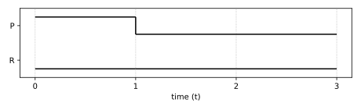
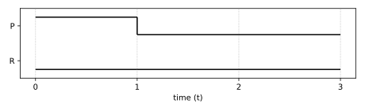
Absence Between #
Between "P" and "Q", it is never the case that "R" holds
Countertraces #
true;⌈(P && !Q)⌉;⌈!Q⌉;⌈(!Q && R)⌉;⌈!Q⌉;⌈Q⌉;true
Phase Event Automata #
Positive Examples: Absence - Between


Absence AfterUntil #
After "P" until "Q", it is never the case that "R" holds
Countertraces #
true;⌈P⌉;⌈!Q⌉;⌈(!Q && R)⌉;true
Phase Event Automata #
Positive Examples: Absence - AfterUntil

ConstrainedChain #
ConstrainedChain Before #
Before "P", it is always the case that if "R" holds, then "S" eventually holds and is succeeded by "T" where "U" does not hold between "S" and "T"
Countertraces #
⌈!P⌉;⌈(!P && R)⌉;⌈(!P && !S)⌉;⌈P⌉;true
⌈!P⌉;⌈(!P && R)⌉;⌈!P⌉;⌈(!P && S)⌉;⌈(!P && !T)⌉;⌈P⌉;true
⌈!P⌉;⌈(!P && R)⌉;⌈!P⌉;⌈(!P && S)⌉;⌈(!P && !T)⌉;⌈(!P && (!T && U))⌉;⌈!P⌉;⌈(!P && T)⌉;⌈!P⌉;⌈P⌉;true
Phase Event Automata #


ConstrainedChain Between #
Between "P" and "Q", it is always the case that if "R" holds, then "S" eventually holds and is succeeded by "T" where "U" does not hold between "S" and "T"
Countertraces #
true;⌈(P && !Q)⌉;⌈!Q⌉;⌈(!Q && R)⌉;⌈(!Q && !S)⌉;⌈Q⌉;true
true;⌈(P && !Q)⌉;⌈!Q⌉;⌈(!Q && R)⌉;⌈!Q⌉;⌈(!Q && S)⌉;⌈(!Q && !T)⌉;⌈Q⌉;true
true;⌈(P && !Q)⌉;⌈!Q⌉;⌈(!Q && R)⌉;⌈!Q⌉;⌈(!Q && S)⌉;⌈(!Q && !T)⌉;⌈(!Q && (!T && U))⌉;⌈!Q⌉;⌈(!Q && T)⌉;⌈!Q⌉;⌈Q⌉;true
Phase Event Automata #
 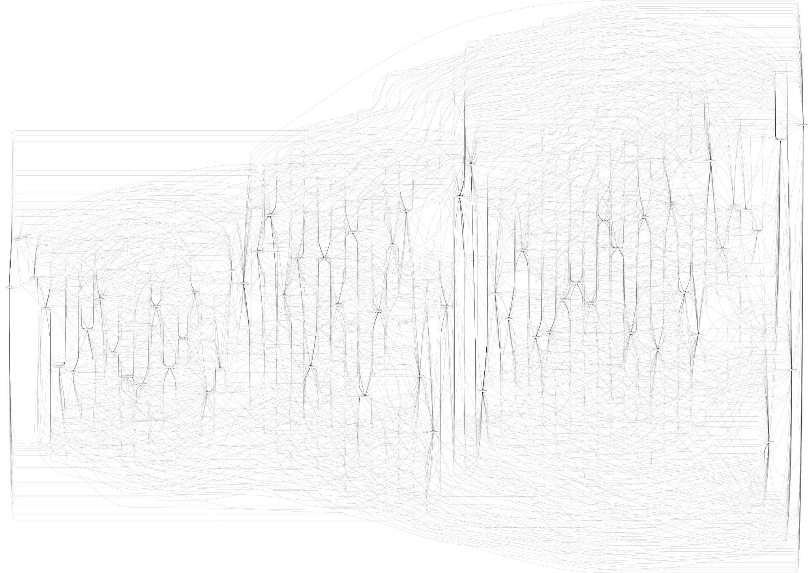
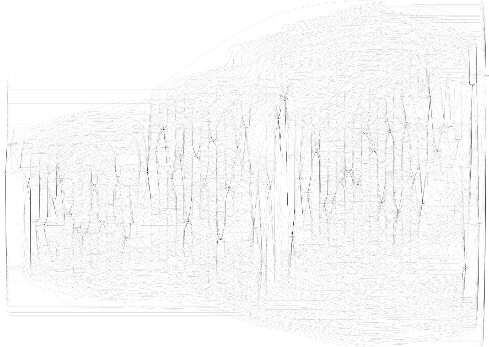
ConstrainedChain Between #
Between "P" and "Q", it is always the case that if "R" holds, then "S" eventually holds and is succeeded by "T" where "U" does not hold between "S" and "T"
Countertraces #
true;⌈(P && !Q)⌉;⌈!Q⌉;⌈(!Q && R)⌉;⌈(!Q && !S)⌉;⌈Q⌉;true
true;⌈(P && !Q)⌉;⌈!Q⌉;⌈(!Q && R)⌉;⌈!Q⌉;⌈(!Q && S)⌉;⌈(!Q && !T)⌉;⌈Q⌉;true
true;⌈(P && !Q)⌉;⌈!Q⌉;⌈(!Q && R)⌉;⌈!Q⌉;⌈(!Q && S)⌉;⌈(!Q && !T)⌉;⌈(!Q && (!T && U))⌉;⌈!Q⌉;⌈(!Q && T)⌉;⌈!Q⌉;⌈Q⌉;true
Phase Event Automata #
DurationBoundL #
DurationBoundL Globally #
Globally, it is always the case that once "R" becomes satisfied, it holds for at least "5" time units
Countertraces #
true;⌈!R⌉;⌈R⌉ ∧ ℓ < 5;⌈!R⌉;true
Phase Event Automata #

DurationBoundL Before #
Before "P", it is always the case that once "R" becomes satisfied, it holds for at least "5" time units
Countertraces #
⌈!P⌉;⌈(!P && !R)⌉;⌈(!P && R)⌉ ∧ ℓ < 5;⌈(!P && !R)⌉;true
Phase Event Automata #

DurationBoundL After #
After "P", it is always the case that once "R" becomes satisfied, it holds for at least "5" time units
Countertraces #
true;⌈P⌉;true;⌈!R⌉;⌈R⌉ ∧ ℓ < 5;⌈!R⌉;true
Phase Event Automata #

DurationBoundL Between #
Between "P" and "Q", it is always the case that once "R" becomes satisfied, it holds for at least "5" time units
Countertraces #
true;⌈(P && !Q)⌉;⌈!Q⌉;⌈(!Q && !R)⌉;⌈(!Q && R)⌉ ∧ ℓ < 5;⌈(!Q && !R)⌉;⌈!Q⌉;⌈Q⌉;true
Phase Event Automata #

DurationBoundL AfterUntil #
After "P" until "Q", it is always the case that once "R" becomes satisfied, it holds for at least "5" time units
Countertraces #
true;⌈P⌉;⌈!Q⌉;⌈(!Q && !R)⌉;⌈(!Q && R)⌉ ∧ ℓ < 5;⌈(!Q && !R)⌉;true
Phase Event Automata #

DurationBoundU #
DurationBoundU Globally #
Globally, it is always the case that once "R" becomes satisfied, it holds for less than "5" time units
Countertraces #
true;⌈R⌉ ∧ ℓ ≥ 5;true
Phase Event Automata #
Positive Examples: DurationBoundU - Globally
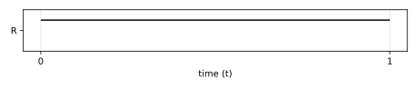
DurationBoundU Before #
Before "P", it is always the case that once "R" becomes satisfied, it holds for less than "5" time units
Countertraces #
⌈!P⌉;⌈(!P && R)⌉ ∧ ℓ ≥ 5;true
Phase Event Automata #

Positive Examples: DurationBoundU - Before
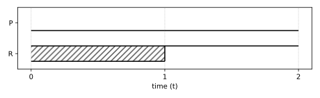
DurationBoundU After #
After "P", it is always the case that once "R" becomes satisfied, it holds for less than "5" time units
Countertraces #
true;⌈P⌉;true;⌈R⌉ ∧ ℓ ≥ 5;true
Phase Event Automata #

Positive Examples: DurationBoundU - After


DurationBoundU Between #
Between "P" and "Q", it is always the case that once "R" becomes satisfied, it holds for less than "5" time units
Countertraces #
true;⌈(P && !Q)⌉;⌈!Q⌉;⌈(!Q && R)⌉ ∧ ℓ ≥ 5;⌈!Q⌉;⌈Q⌉;true
Phase Event Automata #

Positive Examples: DurationBoundU - Between

DurationBoundU AfterUntil #
After "P" until "Q", it is always the case that once "R" becomes satisfied, it holds for less than "5" time units
Countertraces #
true;⌈P⌉;⌈!Q⌉;⌈(!Q && R)⌉ ∧ ℓ ≥ 5;true
Phase Event Automata #
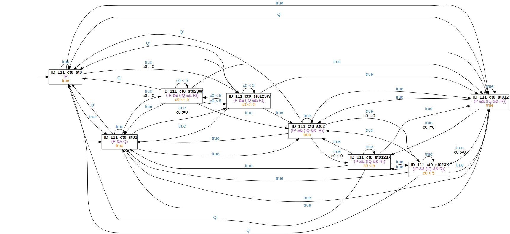
Positive Examples: DurationBoundU - AfterUntil


EdgeResponseBoundL2 #
EdgeResponseBoundL2 Globally #
Globally, it is always the case that once "R" becomes satisfied, "S" holds for at least "5" time units
Countertraces #
true;⌈!R⌉;⌈R⌉;⌈S⌉ ∧ ℓ < 5;⌈!S⌉;true
true;⌈!R⌉;⌈(R && !S)⌉;true
Phase Event Automata #
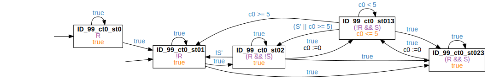 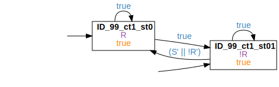
Positive Examples: EdgeResponseBoundL2 - Globally


EdgeResponseBoundL2 Before #
Before "P", it is always the case that once "R" becomes satisfied, "S" holds for at least "5" time units
Countertraces #
⌈!P⌉;⌈(!P && !R)⌉;⌈(!P && R)⌉;⌈(!P && S)⌉ ∧ ℓ < 5;⌈(!P && !S)⌉;true
⌈!P⌉;⌈(!P && !R)⌉;⌈(!P && (R && !S))⌉;true
Phase Event Automata #


Positive Examples: EdgeResponseBoundL2 - Before
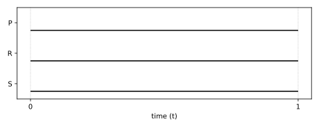
EdgeResponseBoundL2 After #
After "P", it is always the case that once "R" becomes satisfied, "S" holds for at least "5" time units
Countertraces #
true;⌈P⌉;true;⌈!R⌉;⌈R⌉;⌈S⌉ ∧ ℓ < 5;⌈!S⌉;true
true;⌈P⌉;true;⌈!R⌉;⌈(R && !S)⌉;true
Phase Event Automata #

Positive Examples: EdgeResponseBoundL2 - After


EdgeResponseBoundL2 Between #
Between "P" and "Q", it is always the case that once "R" becomes satisfied, "S" holds for at least "5" time units
Countertraces #
true;⌈(P && !Q)⌉;⌈!Q⌉;⌈(!Q && !R)⌉;⌈(!Q && R)⌉;⌈(!Q && S)⌉ ∧ ℓ < 5;⌈(!Q && !S)⌉;⌈!Q⌉;⌈Q⌉;true
true;⌈(P && !Q)⌉;⌈!Q⌉;⌈(!Q && !R)⌉;⌈(!Q && (R && !S))⌉;⌈!Q⌉;⌈Q⌉;true
Phase Event Automata #
EdgeResponseBoundL2 AfterUntil #
After "P" until "Q", it is always the case that once "R" becomes satisfied, "S" holds for at least "5" time units
Countertraces #
true;⌈P⌉;⌈!Q⌉;⌈(!Q && !R)⌉;⌈(!Q && R)⌉;⌈(!Q && S)⌉ ∧ ℓ < 5;⌈(!Q && !S)⌉;true
true;⌈P⌉;⌈!Q⌉;⌈(!Q && !R)⌉;⌈(!Q && (R && !S))⌉;true
Phase Event Automata #
Positive Examples: EdgeResponseBoundL2 - AfterUntil


EdgeResponseBoundU1 #
EdgeResponseBoundU1 Globally #
Globally, it is always the case that once "R" becomes satisfied and holds for at most "5" time units, then "S" holds afterwards
Countertraces #
true;⌈!R⌉;⌈R⌉ ∧ ℓ ≤ 5;⌈(!R && !S)⌉;true
Phase Event Automata #

Positive Examples: EdgeResponseBoundU1 - Globally

EdgeResponseBoundU1 Before #
Before "P", it is always the case that once "R" becomes satisfied and holds for at most "5" time units, then "S" holds afterwards
Countertraces #
⌈!P⌉;⌈(!P && !R)⌉;⌈(!P && R)⌉ ∧ ℓ ≥ 5;⌈(!P && (!R && !S))⌉;true
Phase Event Automata #
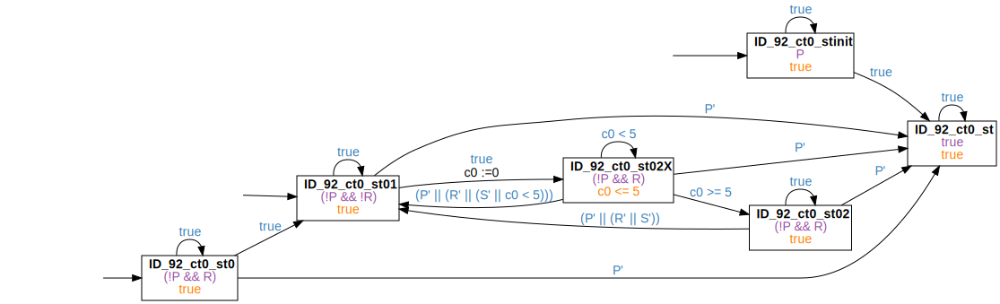
Positive Examples: EdgeResponseBoundU1 - Before
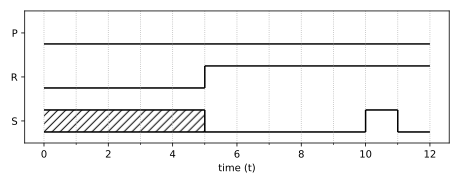
EdgeResponseBoundU1 After #
After "P", it is always the case that once "R" becomes satisfied and holds for at most "5" time units, then "S" holds afterwards
Countertraces #
true;⌈P⌉;true;⌈!R⌉;⌈R⌉ ∧ ℓ ≤ 5;⌈(!R && !S)⌉;true
Phase Event Automata #

Positive Examples: EdgeResponseBoundU1 - After

EdgeResponseBoundU1 Between #
Between "P" and "Q", it is always the case that once "R" becomes satisfied and holds for at most "5" time units, then "S" holds afterwards
Countertraces #
true;⌈(P && !Q)⌉;⌈!Q⌉;⌈(!Q && !R)⌉;⌈(!Q && R)⌉ ∧ ℓ ≤ 5;⌈(!Q && (!R && !S))⌉;⌈!Q⌉;⌈Q⌉;true
Phase Event Automata #

Positive Examples: EdgeResponseBoundU1 - Between


EdgeResponseBoundU1 AfterUntil #
After "P" until "Q", it is always the case that once "R" becomes satisfied and holds for at most "5" time units, then "S" holds afterwards
Countertraces #
true;⌈P⌉;⌈!Q⌉;⌈(!Q && !R)⌉;⌈(!Q && R)⌉ ∧ ℓ ≤ 5;⌈(!Q && (!R && !S))⌉;true
Phase Event Automata #
Positive Examples: EdgeResponseBoundU1 - AfterUntil


EdgeResponseDelay #
EdgeResponseDelay Globally #
Globally, it is always the case that once "R" becomes satisfied, "S" holds after at most "5" time units
Countertraces #
true;⌈!R⌉;⌈(R && !S)⌉;⌈!S⌉ ∧ ℓ > 5;true
Phase Event Automata #
Positive Examples: EdgeResponseDelay - Globally
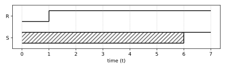 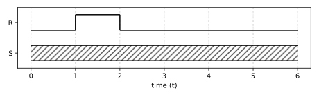
EdgeResponseDelay Before #
Before "P", it is always the case that once "R" becomes satisfied, "S" holds after at most "5" time units
Countertraces #
⌈!P⌉;⌈(!P && !R)⌉;⌈(!P && (R && !S))⌉;⌈(!P && !S)⌉ ∧ ℓ > 5;true
Phase Event Automata #
EdgeResponseDelay After #
After "P", it is always the case that once "R" becomes satisfied, "S" holds after at most "5" time units
Countertraces #
true;⌈P⌉;true;⌈!R⌉;⌈(R && !S)⌉;⌈!S⌉ ∧ ℓ > 5;true
Phase Event Automata #

Positive Examples: EdgeResponseDelay - After
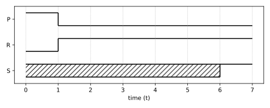


 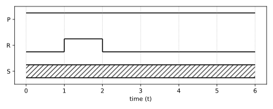
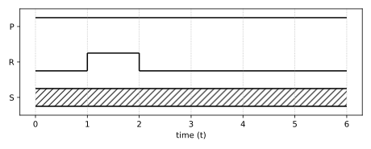
EdgeResponseDelay Between #
Between "P" and "Q", it is always the case that once "R" becomes satisfied, "S" holds after at most "5" time units
Countertraces #
true;⌈(P && !Q)⌉;⌈!Q⌉;⌈(!Q && !R)⌉;⌈(!Q && (R && !S))⌉;⌈(!Q && !S)⌉ ∧ ℓ > 5;true;⌈Q⌉;true
Phase Event Automata #

EdgeResponseDelay AfterUntil #
After "P" until "Q", it is always the case that once "R" becomes satisfied, "S" holds after at most "5" time units
Countertraces #
true;⌈P⌉;⌈!Q⌉;⌈(!Q && !R)⌉;⌈(!Q && (R && !S))⌉;⌈(!Q && !S)⌉ ∧ ℓ > 5;true
Phase Event Automata #

EdgeResponseDelayBoundL2 #
EdgeResponseDelayBoundL2 Globally #
Globally, it is always the case that once "R" becomes satisfied, "S" holds after at most "5" time units for at least "10" time units
Countertraces #
true;⌈!R⌉;⌈(R && !S)⌉;⌈!S⌉ ∧ ℓ > 5;true
true;⌈!R⌉;⌈R⌉;⌈true⌉ ∧ ℓ < 5;⌈S⌉ ∧ ℓ < 10;⌈!S⌉;true
Phase Event Automata #
Positive Examples: EdgeResponseDelayBoundL2 - Globally


 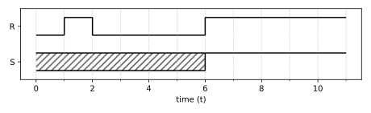
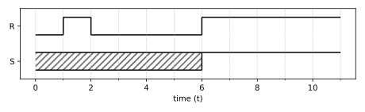
EdgeResponseDelayBoundL2 Before #
Before "P", it is always the case that once "R" becomes satisfied, "S" holds after at most "5" time units for at least "10" time units
Countertraces #
⌈!P⌉;⌈(!P && !R)⌉;⌈(!P && (R && !S))⌉;⌈(!P && !S)⌉ ∧ ℓ > 5;true
⌈!P⌉;⌈(!P && !R)⌉;⌈(!P && R)⌉;⌈!P⌉ ∧ ℓ < 5;⌈(!P && S)⌉ ∧ ℓ < 10;⌈(!P && !S)⌉;true
Phase Event Automata #

Positive Examples: EdgeResponseDelayBoundL2 - Before

EdgeResponseDelayBoundL2 After #
After "P", it is always the case that once "R" becomes satisfied, "S" holds after at most "5" time units for at least "10" time units
Countertraces #
true;⌈P⌉;true;⌈!R⌉;⌈(R && !S)⌉;⌈!S⌉ ∧ ℓ > 5;true
true;⌈P⌉;true;⌈!R⌉;⌈R⌉;⌈true⌉ ∧ ℓ < 5;⌈S⌉ ∧ ℓ < 10;⌈!S⌉;true
Phase Event Automata #


Positive Examples: EdgeResponseDelayBoundL2 - After
 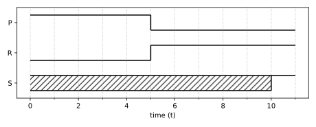
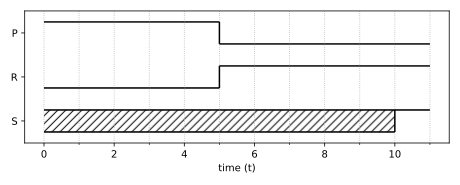


 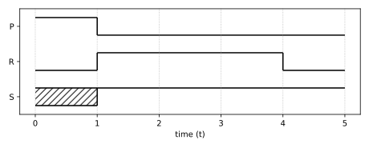
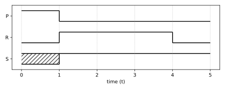


EdgeResponseDelayBoundL2 Between #
Between "P" and "Q", it is always the case that once "R" becomes satisfied, "S" holds after at most "5" time units for at least "10" time units
Countertraces #
true;⌈(P && !Q)⌉;⌈!Q⌉;⌈(!Q && !R)⌉;⌈(!Q && (R && !S))⌉;⌈(!Q && !S)⌉ ∧ ℓ > 5;true;⌈Q⌉;true
true;⌈(P && !Q)⌉;⌈!Q⌉;⌈(!Q && !R)⌉;⌈(!Q && R)⌉;⌈!Q⌉ ∧ ℓ < 5;⌈(!Q && S)⌉ ∧ ℓ < 10;⌈(!Q && !S)⌉;true;⌈Q⌉;true
Phase Event Automata #
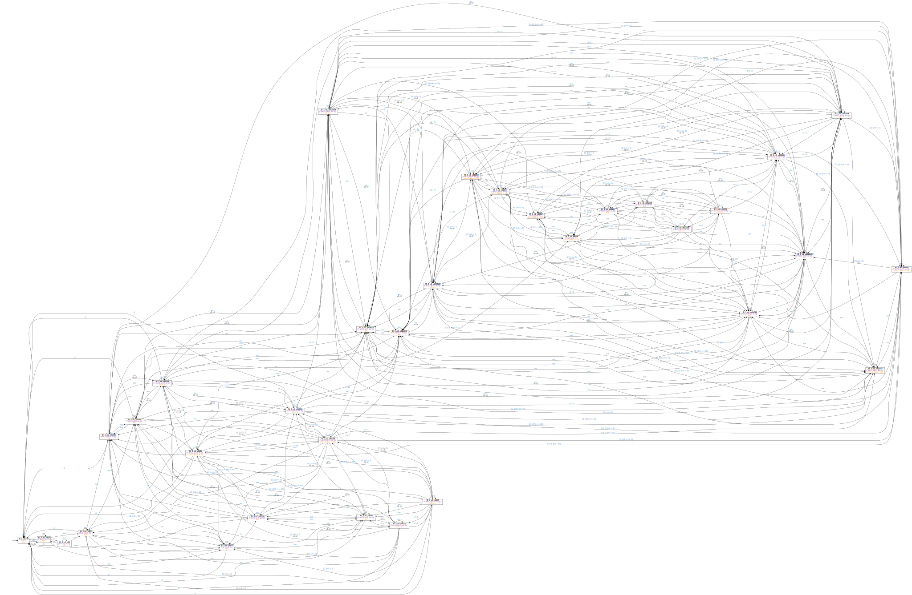
EdgeResponseDelayBoundL2 AfterUntil #
After "P" until "Q", it is always the case that once "R" becomes satisfied, "S" holds after at most "5" time units for at least "10" time units
Countertraces #
true;⌈P⌉;⌈!Q⌉;⌈(!Q && !R)⌉;⌈(!Q && (R && !S))⌉;⌈(!Q && !S)⌉ ∧ ℓ > 5;true
true;⌈P⌉;⌈!Q⌉;⌈(!Q && !R)⌉;⌈(!Q && R)⌉;⌈!Q⌉ ∧ ℓ < 5;⌈(!Q && S)⌉ ∧ ℓ < 10;⌈(!Q && !S)⌉;true
Phase Event Automata #
 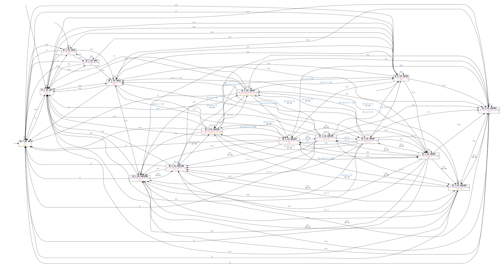
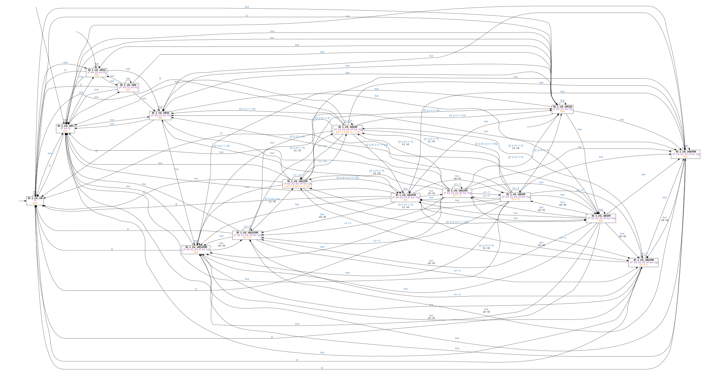
Positive Examples: EdgeResponseDelayBoundL2 - AfterUntil

 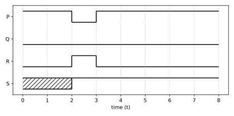
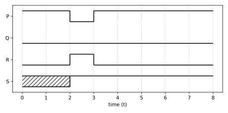
ExistenceBoundU #
ExistenceBoundU Globally #
Globally, transitions to states in which "R" holds occur at most twice
Countertraces #
true;⌈R⌉;⌈!R⌉;⌈R⌉;⌈!R⌉;⌈R⌉;true
Phase Event Automata #

ExistenceBoundU Before #
Before "P", transitions to states in which "R" holds occur at most twice
Countertraces #
⌈!P⌉;⌈(!P && R)⌉;⌈(!P && !R)⌉;⌈(!P && R)⌉;⌈(!P && !R)⌉;⌈(!P && R)⌉;true
Phase Event Automata #

ExistenceBoundU After #
After "P", transitions to states in which "R" holds occur at most twice
Countertraces #
true;⌈P⌉;true;⌈R⌉;⌈!R⌉;⌈R⌉;⌈!R⌉;⌈R⌉;true
Phase Event Automata #
ExistenceBoundU Between #
Between "P" and "Q", transitions to states in which "R" holds occur at most twice
Countertraces #
true;⌈(P && !Q)⌉;⌈!Q⌉;⌈(!Q && R)⌉;⌈(!Q && !R)⌉;⌈(!Q && R)⌉;⌈(!Q && !R)⌉;⌈(!Q && R)⌉;⌈!Q⌉;⌈Q⌉;true
Phase Event Automata #
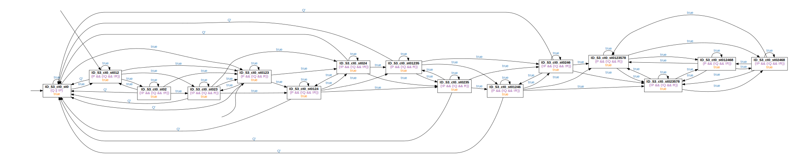
ExistenceBoundU AfterUntil #
After "P" until "Q", transitions to states in which "R" holds occur at most twice
Countertraces #
true;⌈P⌉;⌈!Q⌉;⌈(!Q && R)⌉;⌈(!Q && !R)⌉;⌈(!Q && R)⌉;⌈(!Q && !R)⌉;⌈(!Q && R)⌉;true
Phase Event Automata #

Initialization #
Initialization Globally #
Globally, it is always the case that initially "R" holds
Countertraces #
⌈!R⌉;true
Phase Event Automata #
Initialization Before #
Before "P", it is always the case that initially "R" holds
Countertraces #
⌈(!P && !R)⌉;true
Phase Event Automata #
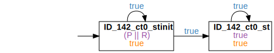
Initialization After #
After "P", it is always the case that initially "R" holds
Countertraces #
true;⌈P⌉;⌈!R⌉;true
Phase Event Automata #
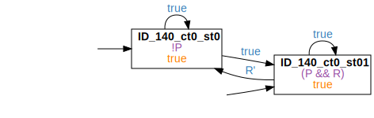
Positive Examples: Initialization - After
Initialization Between #
Between "P" and "Q", it is always the case that initially "R" holds
Countertraces #
true;⌈(P && !Q)⌉;⌈(!Q && !R)⌉;true;⌈Q⌉;true
Phase Event Automata #
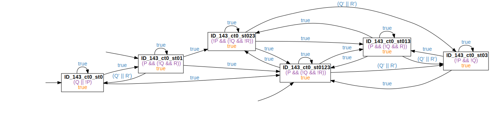
Positive Examples: Initialization - Between
Initialization AfterUntil #
After "P" until "Q", it is always the case that initially "R" holds
Countertraces #
true;⌈P⌉;⌈(!Q && !R)⌉;true
Phase Event Automata #
Positive Examples: Initialization - AfterUntil
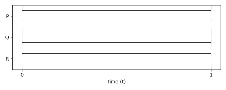
Invariance #
Invariance Globally #
Globally, it is always the case that if "R" holds, then "S" holds as well
Countertraces #
true;⌈(R && !S)⌉;true
Phase Event Automata #
Positive Examples: Invariance - Globally
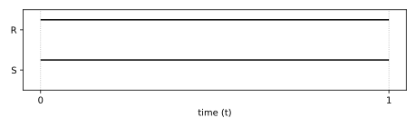
Invariance Before #
Before "P", it is always the case that if "R" holds, then "S" holds as well
Countertraces #
⌈!P⌉;⌈(!P && (R && !S))⌉;true
Phase Event Automata #
Positive Examples: Invariance - Before
Invariance After #
After "P", it is always the case that if "R" holds, then "S" holds as well
Countertraces #
true;⌈P⌉;true;⌈(R && !S)⌉;true
Phase Event Automata #

Positive Examples: Invariance - After
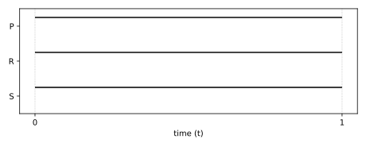 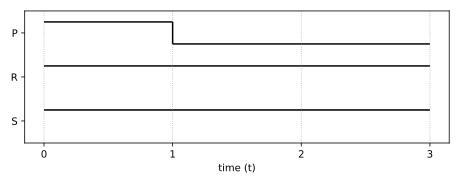
Invariance Between #
Between "P" and "Q", it is always the case that if "R" holds, then "S" holds as well
Countertraces #
true;⌈(P && !Q)⌉;⌈!Q⌉;⌈(!Q && (R && !S))⌉;⌈!Q⌉;⌈Q⌉;true
Phase Event Automata #
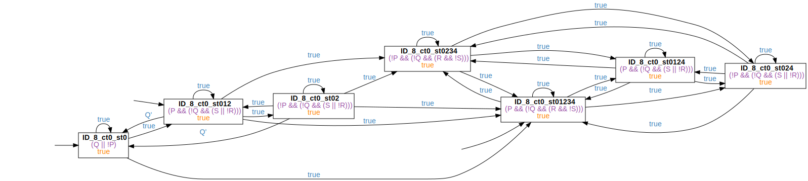
Positive Examples: Invariance - Between
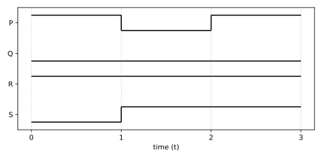
Invariance AfterUntil #
After "P" until "Q", it is always the case that if "R" holds, then "S" holds as well
Countertraces #
true;⌈P⌉;⌈!Q⌉;⌈(!Q && (R && !S))⌉;true
Phase Event Automata #

Positive Examples: Invariance - AfterUntil
InvarianceBoundL2 #
InvarianceBoundL2 Globally #
Globally, it is always the case that if "R" holds, then "S" holds for at least "5" time units
Countertraces #
true;⌈R⌉;⌈true⌉ ∧ ℓ < 5;⌈!S⌉;true
Phase Event Automata #
Positive Examples: InvarianceBoundL2 - Globally
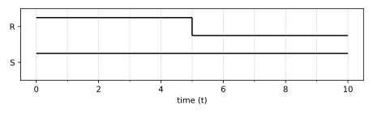
InvarianceBoundL2 Before #
Before "P", it is always the case that if "R" holds, then "S" holds for at least "5" time units
Countertraces #
⌈!P⌉;⌈(!P && R)⌉;⌈!P⌉ ∧ ℓ < 5;⌈(!P && !S)⌉;true
Phase Event Automata #
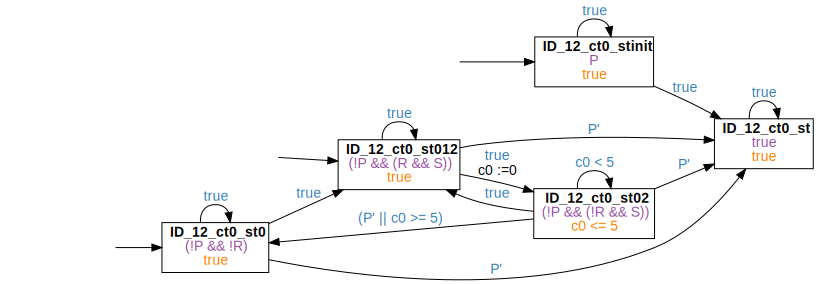
Positive Examples: InvarianceBoundL2 - Before
InvarianceBoundL2 After #
After "P", it is always the case that if "R" holds, then "S" holds for at least "5" time units
Countertraces #
true;⌈P⌉;true;⌈R⌉;⌈true⌉ ∧ ℓ < 5;⌈!S⌉;true
Phase Event Automata #
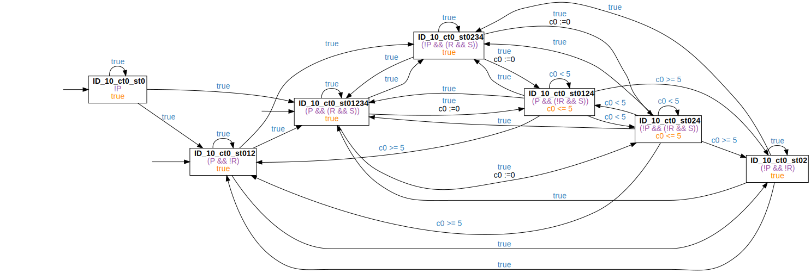
Positive Examples: InvarianceBoundL2 - After

InvarianceBoundL2 Between #
Between "P" and "Q", it is always the case that if "R" holds, then "S" holds for at least "5" time units
Countertraces #
true;⌈(P && !Q)⌉;⌈!Q⌉;⌈(!Q && R)⌉;⌈!Q⌉ ∧ ℓ < 5;⌈(!Q && !S)⌉;⌈!Q⌉;⌈Q⌉;true
Phase Event Automata #
Positive Examples: InvarianceBoundL2 - Between
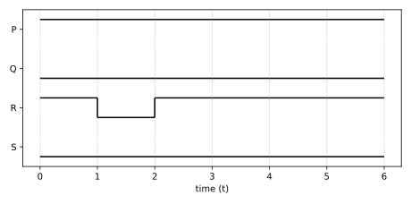 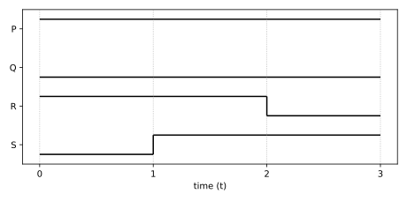
InvarianceBoundL2 AfterUntil #
After "P" until "Q", it is always the case that if "R" holds, then "S" holds for at least "5" time units
Countertraces #
true;⌈P⌉;⌈!Q⌉;⌈(!Q && R)⌉;⌈!Q⌉ ∧ ℓ < 5;⌈(!Q && !S)⌉;true
Phase Event Automata #

Positive Examples: InvarianceBoundL2 - AfterUntil
Persistence #
Persistence Globally #
Globally, it is always the case that if "R" holds, then it holds persistently
Countertraces #
true;⌈R⌉;⌈!R⌉;true
Phase Event Automata #
Persistence Before #
Before "P", it is always the case that if "R" holds, then it holds persistently
Countertraces #
⌈!P⌉;⌈(!P && R)⌉;⌈(!P && !R)⌉;true
Phase Event Automata #
Persistence After #
After "P", it is always the case that if "R" holds, then it holds persistently
Countertraces #
true;⌈P⌉;true;⌈R⌉;⌈!R⌉;true
Phase Event Automata #
Persistence Between #
Between "P" and "Q", it is always the case that if "R" holds, then it holds persistently
Countertraces #
true;⌈(P && !Q)⌉;⌈!Q⌉;⌈(!Q && R)⌉;⌈(!Q && !R)⌉;⌈!Q⌉;⌈Q⌉;true
Phase Event Automata #
Persistence AfterUntil #
After "P" until "Q", it is always the case that if "R" holds, then it holds persistently
Countertraces #
true;⌈P⌉;⌈!Q⌉;⌈(!Q && R)⌉;⌈(!Q && !R)⌉;true
Phase Event Automata #
Precedence #
Precedence Globally #
Globally, it is always the case that if "R" holds, then "S" previously held
Countertraces #
⌈!S⌉;⌈R⌉;true
Phase Event Automata #

Positive Examples: Precedence - Globally
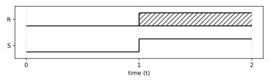
Precedence Before #
Before "P", it is always the case that if "R" holds, then "S" previously held
Countertraces #
⌈(!P && !S)⌉;⌈(!P && R)⌉;true
Phase Event Automata #
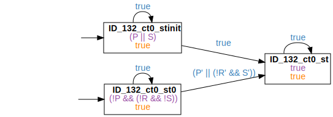
Positive Examples: Precedence - Before
Precedence After #
After "P", it is always the case that if "R" holds, then "S" previously held
Countertraces #
true;⌈P⌉;⌈!S⌉;⌈R⌉;true
Phase Event Automata #

Positive Examples: Precedence - After
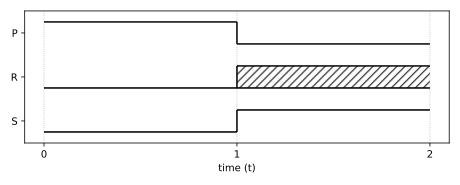 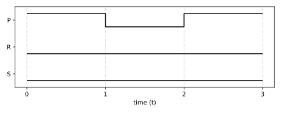 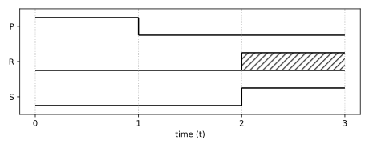
Precedence Between #
Between "P" and "Q", it is always the case that if "R" holds, then "S" previously held
Countertraces #
true;⌈(P && (!Q && !S))⌉;⌈(!Q && !S)⌉;⌈(!Q && R)⌉;⌈!Q⌉;⌈Q⌉;true
Phase Event Automata #

Positive Examples: Precedence - Between
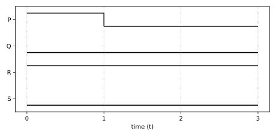 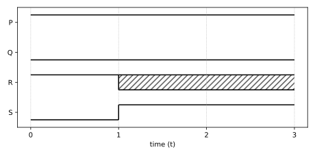 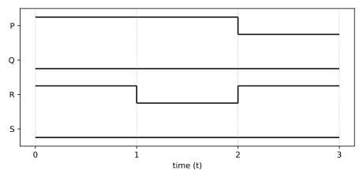 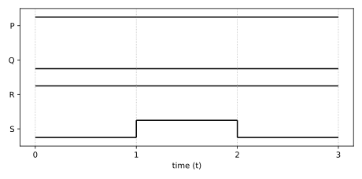
Precedence AfterUntil #
After "P" until "Q", it is always the case that if "R" holds, then "S" previously held
Countertraces #
true;⌈P⌉;⌈(!Q && !S)⌉;⌈(!Q && R)⌉;true
Phase Event Automata #

Positive Examples: Precedence - AfterUntil
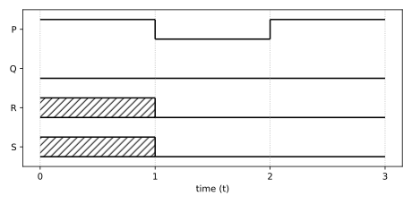
PrecedenceChain12 #
PrecedenceChain12 Globally #
Globally, it is always the case that if "R" holds and is succeeded by "S", then "T" previously held
Countertraces #
⌈!T⌉;⌈R⌉;true;⌈S⌉;true
Phase Event Automata #

Positive Examples: PrecedenceChain12 - Globally
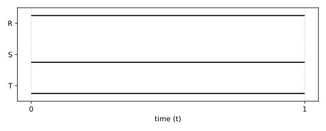
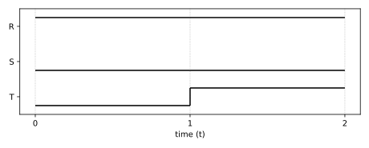
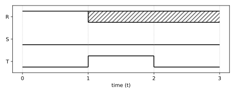
 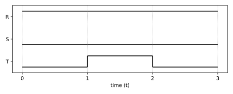
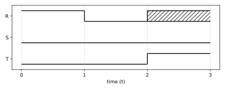
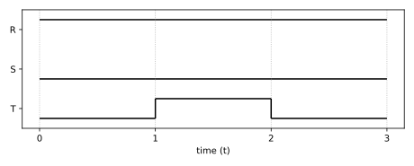
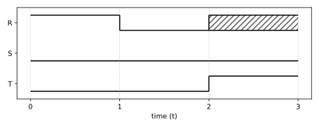
PrecedenceChain12 Before #
Before "P", it is always the case that if "R" holds and is succeeded by "S", then "T" previously held
Countertraces #
⌈(!P && !T)⌉;⌈(!P && R)⌉;⌈!P⌉;⌈(!P && S)⌉;true
Phase Event Automata #

Positive Examples: PrecedenceChain12 - Before
PrecedenceChain12 After #
After "P", it is always the case that if "R" holds and is succeeded by "S", then "T" previously held
Countertraces #
true;⌈P⌉;⌈!T⌉;⌈R⌉;true;⌈S⌉;true
Phase Event Automata #
Positive Examples: PrecedenceChain12 - After
PrecedenceChain12 Between #
Between "P" and "Q", it is always the case that if "R" holds and is succeeded by "S", then "T" previously held
Countertraces #
true;⌈(P && !Q)⌉;⌈(!Q && !T)⌉;⌈(!Q && R)⌉;⌈!Q⌉;⌈(!Q && S)⌉;⌈!Q⌉;⌈Q⌉;true
Phase Event Automata #

Positive Examples: PrecedenceChain12 - Between


PrecedenceChain12 AfterUntil #
After "P" until "Q", it is always the case that if "R" holds and is succeeded by "S", then "T" previously held
Countertraces #
true;⌈P⌉;⌈(!Q && !T)⌉;⌈(!Q && R)⌉;⌈!Q⌉;⌈(!Q && S)⌉;true
Phase Event Automata #

Positive Examples: PrecedenceChain12 - AfterUntil
PrecedenceChain21 #
PrecedenceChain21 Globally #
Globally, it is always the case that if "R" holds, then "S" previously held and was preceded by "T"
Countertraces #
⌈!T⌉;⌈R⌉;true
⌈!S⌉;⌈R⌉;true
⌈!T⌉;⌈(S && !T)⌉;⌈!T⌉;⌈(!S && T)⌉;⌈!S⌉;⌈R⌉;true
Phase Event Automata #


Positive Examples: PrecedenceChain21 - Globally
PrecedenceChain21 Before #
Before "P", it is always the case that if "R" holds, then "S" previously held and was preceded by "T"
Countertraces #
⌈(!P && !T)⌉;⌈(!P && R)⌉;true
⌈(!P && !S)⌉;⌈(!P && R)⌉;true
⌈(!P && !T)⌉;⌈(!P && (S && !T))⌉;⌈(!P && !T)⌉;⌈(!P && (!S && T))⌉;⌈(!P && !S)⌉;⌈(!P && R)⌉;true
Phase Event Automata #
Positive Examples: PrecedenceChain21 - Before
PrecedenceChain21 After #
After "P", it is always the case that if "R" holds, then "S" previously held and was preceded by "T"
Countertraces #
true;⌈P⌉;⌈!T⌉;⌈R⌉;true
true;⌈P⌉;⌈!S⌉;⌈R⌉;true
true;⌈P⌉;⌈!T⌉;⌈(S && !T)⌉;⌈!T⌉;⌈(!S && T)⌉;⌈!S⌉;⌈R⌉;true
Phase Event Automata #


Positive Examples: PrecedenceChain21 - After


PrecedenceChain21 Between #
Between "P" and "Q", it is always the case that if "R" holds, then "S" previously held and was preceded by "T"
Countertraces #
true;⌈(P && !Q)⌉;⌈(!Q && !T)⌉;⌈(!Q && R)⌉;⌈!Q⌉;⌈Q⌉;true
true;⌈(P && !Q)⌉;⌈(!Q && !S)⌉;⌈(!Q && R)⌉;⌈!Q⌉;⌈Q⌉;true
true;⌈(P && !Q)⌉;⌈(!Q && !T)⌉;⌈(!Q && (S && !T))⌉;⌈(!Q && !T)⌉;⌈(!Q && (!S && T))⌉;⌈(!Q && !S)⌉;⌈(!Q && R)⌉;⌈!Q⌉;⌈Q⌉;true
Phase Event Automata #


PrecedenceChain21 AfterUntil #
After "P" until "Q", it is always the case that if "R" holds, then "S" previously held and was preceded by "T"
Countertraces #
true;⌈P⌉;⌈(!Q && !T)⌉;⌈(!Q && R)⌉;true
true;⌈P⌉;⌈(!Q && !S)⌉;⌈(!Q && R)⌉;true
true;⌈P⌉;⌈(!Q && !T)⌉;⌈(!Q && (S && !T))⌉;⌈(!Q && !T)⌉;⌈(!Q && (!S && T))⌉;⌈(!Q && !S)⌉;⌈(!Q && R)⌉;true
Phase Event Automata #

Positive Examples: PrecedenceChain21 - AfterUntil

ReccurrenceBoundL #
ReccurrenceBoundL Globally #
Globally, it is always the case that "R" holds at least every "5" time units
Countertraces #
true;⌈!R⌉ ∧ ℓ > 5;true
Phase Event Automata #

ReccurrenceBoundL Before #
Before "P", it is always the case that "R" holds at least every "5" time units
Countertraces #
⌈!P⌉;⌈(!P && !R)⌉ ∧ ℓ > 5;true
Phase Event Automata #

ReccurrenceBoundL After #
After "P", it is always the case that "R" holds at least every "5" time units
Countertraces #
true;⌈P⌉;true;⌈!R⌉ ∧ ℓ > 5;true
Phase Event Automata #
ReccurrenceBoundL Between #
Between "P" and "Q", it is always the case that "R" holds at least every "5" time units
Countertraces #
true;⌈(P && !Q)⌉;⌈!Q⌉;⌈(!Q && !R)⌉ ∧ ℓ > 5;⌈!Q⌉;⌈Q⌉;true
Phase Event Automata #
Positive Examples: ReccurrenceBoundL - Between


ReccurrenceBoundL AfterUntil #
After "P" until "Q", it is always the case that "R" holds at least every "5" time units
Countertraces #
true;⌈P⌉;⌈!Q⌉;⌈(!Q && !R)⌉ ∧ ℓ > 5;true
Phase Event Automata #
Response #
Response Before #
Before "P", it is always the case that if "R" holds, then "S" eventually holds
Countertraces #
⌈!P⌉;⌈(!P && (R && !S))⌉;⌈(!P && !S)⌉;⌈P⌉;true
Phase Event Automata #

Positive Examples: Response - Before
Response Between #
Between "P" and "Q", it is always the case that if "R" holds, then "S" eventually holds
Countertraces #
true;⌈(P && !Q)⌉;⌈!Q⌉;⌈(!Q && (R && !S))⌉;⌈(!Q && !S)⌉;⌈Q⌉;true
Phase Event Automata #

Positive Examples: Response - Between
Response AfterUntil #
After "P" until "Q", it is always the case that if "R" holds, then "S" eventually holds
Countertraces #
true;⌈P⌉;⌈!Q⌉;⌈(!Q && (R && !S))⌉;⌈(!Q && !S)⌉;⌈Q⌉;true
Phase Event Automata #
Positive Examples: Response - AfterUntil
ResponseBoundL1 #
ResponseBoundL1 Globally #
Globally, it is always the case that if "R" holds for at least "5" time units, then "S" holds afterwards
Countertraces #
true;⌈R⌉ ∧ ℓ ≥ 5;⌈!S⌉;true
Phase Event Automata #
Positive Examples: ResponseBoundL1 - Globally
ResponseBoundL1 Before #
Before "P", it is always the case that if "R" holds for at least "5" time units, then "S" holds afterwards
Countertraces #
⌈!P⌉;⌈(!P && R)⌉ ∧ ℓ ≥ 5;⌈(!P && !S)⌉;true
Phase Event Automata #

Positive Examples: ResponseBoundL1 - Before
ResponseBoundL1 After #
After "P", it is always the case that if "R" holds for at least "5" time units, then "S" holds afterwards
Countertraces #
true;⌈P⌉;true;⌈R⌉ ∧ ℓ ≥ 5;⌈!S⌉;true
Phase Event Automata #
Positive Examples: ResponseBoundL1 - After

ResponseBoundL1 Between #
Between "P" and "Q", it is always the case that if "R" holds for at least "5" time units, then "S" holds afterwards
Countertraces #
true;⌈(P && !Q)⌉;⌈!Q⌉;⌈(!Q && R)⌉ ∧ ℓ ≥ 5;⌈(!Q && !S)⌉;⌈!Q⌉;⌈Q⌉;true
Phase Event Automata #

Positive Examples: ResponseBoundL1 - Between
ResponseBoundL1 AfterUntil #
After "P" until "Q", it is always the case that if "R" holds for at least "5" time units, then "S" holds afterwards
Countertraces #
true;⌈P⌉;⌈!Q⌉;⌈(!Q && R)⌉ ∧ ℓ ≥ 5;⌈(!Q && !S)⌉;true
Phase Event Automata #

Positive Examples: ResponseBoundL1 - AfterUntil

ResponseBoundL12 #
ResponseBoundL12 Globally #
Globally, it is always the case that if "R" holds for at least "5" time units, then "S" holds afterwards for at least "10" time units
Countertraces #
true;⌈R⌉ ∧ ℓ ≥ 5;⌈S⌉ ∧ ℓ <₀ 10;⌈!S⌉;true
Phase Event Automata #

Positive Examples: ResponseBoundL12 - Globally
ResponseBoundL12 Before #
Before "P", it is always the case that if "R" holds for at least "5" time units, then "S" holds afterwards for at least "10" time units
Countertraces #
⌈!P⌉;⌈(!P && R)⌉ ∧ ℓ ≥ 5;⌈(!P && S)⌉ ∧ ℓ <₀ 10;⌈(!P && !S)⌉;true
Phase Event Automata #
Positive Examples: ResponseBoundL12 - Before
ResponseBoundL12 After #
After "P", it is always the case that if "R" holds for at least "5" time units, then "S" holds afterwards for at least "10" time units
Countertraces #
true;⌈P⌉;⌈R⌉ ∧ ℓ ≥ 5;⌈S⌉ ∧ ℓ <₀ 10;⌈!S⌉;true
Phase Event Automata #

Positive Examples: ResponseBoundL12 - After
ResponseBoundL12 Between #
Between "P" and "Q", it is always the case that if "R" holds for at least "5" time units, then "S" holds afterwards for at least "10" time units
Countertraces #
true;⌈(P && !Q)⌉;⌈!Q⌉;⌈(!Q && R)⌉ ∧ ℓ ≥ 5;⌈(!Q && S)⌉ ∧ ℓ <₀ 10;⌈(!Q && !S)⌉;true;⌈Q⌉;true
Phase Event Automata #
ResponseBoundL12 AfterUntil #
After "P" until "Q", it is always the case that if "R" holds for at least "5" time units, then "S" holds afterwards for at least "10" time units
Countertraces #
true;⌈P⌉;⌈!Q⌉;⌈(!Q && R)⌉ ∧ ℓ ≥ 5;⌈(!Q && S)⌉ ∧ ℓ <₀ 10;⌈(!Q && !S)⌉;true
Phase Event Automata #
Positive Examples: ResponseBoundL12 - AfterUntil
ResponseChain12 #
ResponseChain12 Before #
Before "P", it is always the case that if "R" holds, then "S" eventually holds and is succeeded by "T"
Countertraces #
⌈!P⌉;⌈(!P && R)⌉;⌈(!P && !S)⌉;⌈P⌉;true
⌈!P⌉;⌈(!P && R)⌉;⌈!P⌉;⌈(!P && S)⌉;⌈(!P && !T)⌉;⌈P⌉;true
Phase Event Automata #


Positive Examples: ResponseChain12 - Before
ResponseChain12 Between #
Between "P" and "Q", it is always the case that if "R" holds, then "S" eventually holds and is succeeded by "T"
Countertraces #
true;⌈(P && !Q)⌉;⌈!Q⌉;⌈(!Q && R)⌉;⌈(!Q && !S)⌉;⌈Q⌉;true
true;⌈(P && !Q)⌉;⌈!Q⌉;⌈(!Q && R)⌉;⌈!Q⌉;⌈(!Q && S)⌉;⌈(!Q && !T)⌉;⌈Q⌉;true
Phase Event Automata #


Positive Examples: ResponseChain12 - Between


ResponseChain12 AfterUntil #
After "P" until "Q", it is always the case that if "R" holds, then "S" eventually holds and is succeeded by "T"
Countertraces #
true;⌈P⌉;⌈!Q⌉;⌈(!Q && R)⌉;⌈(!Q && !S)⌉;⌈Q⌉;true
true;⌈P⌉;⌈!Q⌉;⌈(!Q && R)⌉;⌈!Q⌉;⌈(!Q && S)⌉;⌈(!Q && !T)⌉;⌈Q⌉;true
Phase Event Automata #


Positive Examples: ResponseChain12 - AfterUntil


ResponseDelay #
ResponseDelay Globally #
Globally, it is always the case that if "R" holds, then "S" holds after at most "5" time units
Countertraces #
true;⌈(R && !S)⌉;⌈!S⌉ ∧ ℓ > 5;true
Phase Event Automata #
Positive Examples: ResponseDelay - Globally
ResponseDelay Before #
Before "P", it is always the case that if "R" holds, then "S" holds after at most "5" time units
Countertraces #
⌈!P⌉;⌈(!P && (R && !S))⌉;⌈(!P && !S)⌉ ∧ ℓ > 5;true
Phase Event Automata #
ResponseDelay After #
After "P", it is always the case that if "R" holds, then "S" holds after at most "5" time units
Countertraces #
true;⌈P⌉;true;⌈(R && !S)⌉;⌈!S⌉ ∧ ℓ > 5;true
Phase Event Automata #
Positive Examples: ResponseDelay - After
ResponseDelay Between #
Between "P" and "Q", it is always the case that if "R" holds, then "S" holds after at most "5" time units
Countertraces #
true;⌈(P && !Q)⌉;⌈!Q⌉;⌈(!Q && (R && !S))⌉;⌈(!Q && !S)⌉ ∧ ℓ > 5;⌈!Q⌉;⌈Q⌉;true
Phase Event Automata #

ResponseDelay AfterUntil #
After "P" until "Q", it is always the case that if "R" holds, then "S" holds after at most "5" time units
Countertraces #
true;⌈P⌉;⌈!Q⌉;⌈(!Q && (R && !S))⌉;⌈(!Q && !S)⌉ ∧ ℓ > 5;true
Phase Event Automata #

ResponseDelayBoundL1 #
ResponseDelayBoundL1 Globally #
Globally, it is always the case that if "R" holds for at least "5" time units, then "S" holds after at most "10" time units
Countertraces #
true;⌈R⌉ ∧ ℓ ≥ 5;⌈!S⌉ ∧ ℓ > 10;true
Phase Event Automata #
Positive Examples: ResponseDelayBoundL1 - Globally
ResponseDelayBoundL1 Before #
Before "P", it is always the case that if "R" holds for at least "5" time units, then "S" holds after at most "10" time units
Countertraces #
⌈!P⌉;⌈(!P && R)⌉ ∧ ℓ ≥ 5;⌈(!P && !S)⌉ ∧ ℓ > 10;true
Phase Event Automata #

ResponseDelayBoundL1 After #
After "P", it is always the case that if "R" holds for at least "5" time units, then "S" holds after at most "10" time units
Countertraces #
true;⌈P⌉;true;⌈R⌉ ∧ ℓ ≥ 5;⌈!S⌉ ∧ ℓ > 10;true
Phase Event Automata #

Positive Examples: ResponseDelayBoundL1 - After

ResponseDelayBoundL1 Between #
Between "P" and "Q", it is always the case that if "R" holds for at least "5" time units, then "S" holds after at most "10" time units
Countertraces #
true;⌈(P && !Q)⌉;⌈!Q⌉;⌈(!Q && R)⌉ ∧ ℓ ≥ 5;⌈(!Q && !S)⌉ ∧ ℓ > 10;true;⌈Q⌉;true
Phase Event Automata #
ResponseDelayBoundL1 AfterUntil #
After "P" until "Q", it is always the case that if "R" holds for at least "5" time units, then "S" holds after at most "10" time units
Countertraces #
true;⌈P⌉;⌈!Q⌉;⌈(!Q && R)⌉ ∧ ℓ ≥ 5;⌈(!Q && !S)⌉ ∧ ℓ > 10;true
Phase Event Automata #

ResponseDelayBoundL2 #
ResponseDelayBoundL2 Globally #
Globally, it is always the case that if "R" holds, then "S" holds after at most "5" time units for at least "10" time units
Countertraces #
true;⌈R⌉;⌈!S⌉ ∧ ℓ > 5;true
true;⌈R⌉;⌈!S⌉ ∧ ℓ <₀ 5;⌈S⌉ ∧ ℓ < 10;⌈!S⌉;true
Phase Event Automata #
Positive Examples: ResponseDelayBoundL2 - Globally
ResponseDelayBoundL2 Before #
Before "P", it is always the case that if "R" holds, then "S" holds after at most "5" time units for at least "10" time units
Countertraces #
⌈!P⌉;⌈(!P && R)⌉;⌈(!P && !S)⌉ ∧ ℓ > 5;true
⌈!P⌉;⌈(!P && R)⌉;⌈(!P && !S)⌉ ∧ ℓ <₀ 5;⌈(!P && S)⌉ ∧ ℓ < 10;⌈(!P && !S)⌉;true
Phase Event Automata #


Positive Examples: ResponseDelayBoundL2 - Before
ResponseDelayBoundL2 After #
After "P", it is always the case that if "R" holds, then "S" holds after at most "5" time units for at least "10" time units
Countertraces #
true;⌈P⌉;true;⌈R⌉;⌈!S⌉ ∧ ℓ > 5;true
true;⌈P⌉;true;⌈R⌉;⌈!S⌉ ∧ ℓ <₀ 5;⌈S⌉ ∧ ℓ < 10;⌈!S⌉;true
Phase Event Automata #
Positive Examples: ResponseDelayBoundL2 - After

ResponseDelayBoundL2 Between #
Between "P" and "Q", it is always the case that if "R" holds, then "S" holds after at most "5" time units for at least "10" time units
Countertraces #
true;⌈(P && !Q)⌉;⌈!Q⌉;⌈(!Q && R)⌉;⌈(!Q && !S)⌉ ∧ ℓ > 5;true;⌈Q⌉;true
true;⌈(P && !Q)⌉;⌈!Q⌉;⌈(!Q && R)⌉;⌈(!Q && !S)⌉ ∧ ℓ <₀ 5;⌈(!Q && S)⌉ ∧ ℓ < 10;⌈(!Q && !S)⌉;true;⌈Q⌉;true
Phase Event Automata #

ResponseDelayBoundL2 AfterUntil #
After "P" until "Q", it is always the case that if "R" holds, then "S" holds after at most "5" time units for at least "10" time units
Countertraces #
true;⌈P⌉;⌈!Q⌉;⌈(!Q && R)⌉;⌈(!Q && !S)⌉ ∧ ℓ > 5;true
true;⌈P⌉;⌈!Q⌉;⌈(!Q && R)⌉;⌈(!Q && !S)⌉ ∧ ℓ <₀ 5;⌈(!Q && S)⌉ ∧ ℓ < 10;⌈(!Q && !S)⌉;true
Phase Event Automata #

Positive Examples: ResponseDelayBoundL2 - AfterUntil

TriggerResponseBoundL1 #
TriggerResponseBoundL1 Globally #
Globally, it is always the case that after "R" holds for at least "5" time units and "S" holds, then "T" holds
Countertraces #
true;⌈R⌉ ∧ ℓ ≥ 5;⌈(R && (S && !T))⌉;true
Phase Event Automata #

Positive Examples: TriggerResponseBoundL1 - Globally
TriggerResponseBoundL1 Before #
Before "P", it is always the case that after "R" holds for at least "5" time units and "S" holds, then "T" holds
Countertraces #
⌈!P⌉;⌈(!P && R)⌉ ∧ ℓ ≥ 5;⌈(!P && (R && (S && !T)))⌉;true
Phase Event Automata #

Positive Examples: TriggerResponseBoundL1 - Before
TriggerResponseBoundL1 After #
After "P", it is always the case that after "R" holds for at least "5" time units and "S" holds, then "T" holds
Countertraces #
true;⌈P⌉;true;⌈R⌉ ∧ ℓ ≥ 5;⌈(R && (S && !T))⌉;true
Phase Event Automata #
Positive Examples: TriggerResponseBoundL1 - After
TriggerResponseBoundL1 Between #
Between "P" and "Q", it is always the case that after "R" holds for at least "5" time units and "S" holds, then "T" holds
Countertraces #
true;⌈(P && !Q)⌉;⌈!Q⌉;⌈(!Q && R)⌉ ∧ ℓ ≥ 5;⌈(!Q && (R && (S && !T)))⌉;true;⌈Q⌉;true
Phase Event Automata #

Positive Examples: TriggerResponseBoundL1 - Between
TriggerResponseBoundL1 AfterUntil #
After "P" until "Q", it is always the case that after "R" holds for at least "5" time units and "S" holds, then "T" holds
Countertraces #
true;⌈P⌉;⌈!Q⌉;⌈(!Q && R)⌉ ∧ ℓ ≥ 5;⌈(!Q && (R && (S && !T)))⌉;true
Phase Event Automata #

Positive Examples: TriggerResponseBoundL1 - AfterUntil

TriggerResponseDelayBoundL1 #
TriggerResponseDelayBoundL1 Globally #
Globally, it is always the case that after "R" holds for at least "5" time units and "S" holds, then "T" holds after at most "10" time units
Countertraces #
true;⌈R⌉ ∧ ℓ ≥ 5;⌈(R && (S && !T))⌉;⌈!T⌉ ∧ ℓ > 10;true
Phase Event Automata #

Positive Examples: TriggerResponseDelayBoundL1 - Globally
TriggerResponseDelayBoundL1 Before #
Before "P", it is always the case that after "R" holds for at least "5" time units and "S" holds, then "T" holds after at most "10" time units
Countertraces #
⌈!P⌉;⌈(!P && R)⌉ ∧ ℓ ≥ 5;⌈(!P && (R && (S && !T)))⌉;⌈(!P && !T)⌉ ∧ ℓ > 10;true
Phase Event Automata #

TriggerResponseDelayBoundL1 After #
After "P", it is always the case that after "R" holds for at least "5" time units and "S" holds, then "T" holds after at most "10" time units
Countertraces #
true;⌈P⌉;true;⌈R⌉ ∧ ℓ ≥ 5;⌈(R && (S && !T))⌉;⌈!T⌉ ∧ ℓ > 10;true
Phase Event Automata #
Positive Examples: TriggerResponseDelayBoundL1 - After
TriggerResponseDelayBoundL1 Between #
Between "P" and "Q", it is always the case that after "R" holds for at least "5" time units and "S" holds, then "T" holds after at most "10" time units
Countertraces #
true;⌈(P && !Q)⌉;⌈!Q⌉;⌈(!Q && R)⌉ ∧ ℓ ≥ 5;⌈(!Q && (R && (S && !T)))⌉;⌈(!Q && !T)⌉ ∧ ℓ > 10;true;⌈Q⌉;true
Phase Event Automata #
TriggerResponseDelayBoundL1 AfterUntil #
After "P" until "Q", it is always the case that after "R" holds for at least "5" time units and "S" holds, then "T" holds after at most "10" time units
Countertraces #
true;⌈P⌉;⌈!Q⌉;⌈(!Q && R)⌉ ∧ ℓ ≥ 5;⌈(!Q && (R && (S && !T)))⌉;⌈(!Q && !T)⌉ ∧ ℓ > 10;true
Phase Event Automata #

Universality #
Universality Globally #
Globally, it is always the case that "R" holds
Countertraces #
true;⌈!R⌉;true
Phase Event Automata #
Positive Examples: Universality - Globally
Universality Before #
Before "P", it is always the case that "R" holds
Countertraces #
⌈!P⌉;⌈(!P && !R)⌉;true
Phase Event Automata #
Positive Examples: Universality - Before
Universality After #
After "P", it is always the case that "R" holds
Countertraces #
true;⌈P⌉;true;⌈!R⌉;true
Phase Event Automata #

Positive Examples: Universality - After
Universality Between #
Between "P" and "Q", it is always the case that "R" holds
Countertraces #
true;⌈(P && !Q)⌉;⌈!Q⌉;⌈(!Q && !R)⌉;⌈!Q⌉;⌈Q⌉;true
Phase Event Automata #
Positive Examples: Universality - Between
Universality AfterUntil #
After "P" until "Q", it is always the case that "R" holds
Countertraces #
true;⌈P⌉;⌈!Q⌉;⌈(!Q && !R)⌉;true
Phase Event Automata #

Positive Examples: Universality - AfterUntil
UniversalityDelay #
UniversalityDelay Globally #
Globally, it is always the case that "R" holds after at most "5" time units
Countertraces #
⌈true⌉ ∧ ℓ ≥ 5;⌈!R⌉;true
Phase Event Automata #

Positive Examples: UniversalityDelay - Globally
UniversalityDelay Before #
Before "P", it is always the case that "R" holds after at most "5" time units
Countertraces #
⌈!P⌉ ∧ ℓ ≥ 5;⌈(!P && !R)⌉;true
Phase Event Automata #

Positive Examples: UniversalityDelay - Before
UniversalityDelay After #
After "P", it is always the case that "R" holds after at most "5" time units
Countertraces #
true;⌈P⌉;⌈true⌉ ∧ ℓ ≥ 5;⌈!R⌉;true
Phase Event Automata #
Positive Examples: UniversalityDelay - After
UniversalityDelay Between #
Between "P" and "Q", it is always the case that "R" holds after at most "5" time units
Countertraces #
true;⌈(P && !Q)⌉;⌈!Q⌉ ∧ ℓ ≥ 5;⌈(!Q && !R)⌉;true;⌈Q⌉;true
Phase Event Automata #
Positive Examples: UniversalityDelay - Between
UniversalityDelay AfterUntil #
After "P" until "Q", it is always the case that "R" holds after at most "5" time units
Countertraces #
true;⌈P⌉;⌈!Q⌉ ∧ ℓ ≥ 5;⌈(!Q && !R)⌉;true
Phase Event Automata #

Positive Examples: UniversalityDelay - AfterUntil